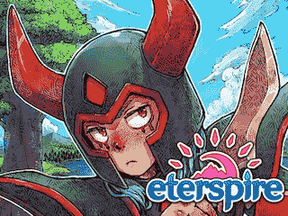
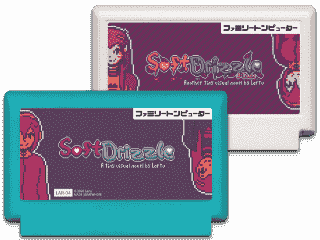
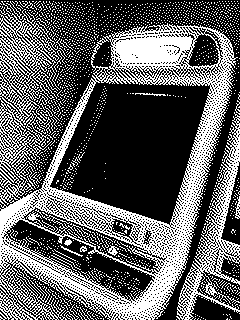
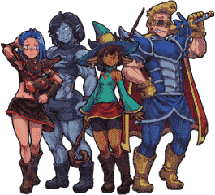

Videogames I've Developed
This section talks abouts the videogames I've developed.
Most of them can also be found on my Itch.io page.

Eterspire
Eterspire is an award winning MMORPG with over hundreds of thousands of
registered users where your skill and dedication define your progression!
With a friendly and active community, content updates every two weeks, and a
massive world full of charming characters, Eterspire delivers the classic immersive MMO gameplay rarely found on mobile!
Eterspire went through many iterations:
-
Eterspire (Journey Anew!)
iOS & Android, 2024
Award Winning MMORPG with over 100K players. A rework of most content from Eterspire (2023), focused on streamlining the gameplay experience and making it more welcoming to new players. It introduces a main storyline and multiple quality of life features that make the game much better.
-
Eterspire (Mobile, Alpha 3)
iOS & Android, 2023
A complete, graphically superior rewrite of Eterspire, focused on questing, befriending wacky characters, exploring, and upgrading your gear. We felt the game was now more suited for mobile devices, so we took the leap. Dubbed "the best mobile MMORPG in the history of the universe" by ourselves.
-
Eterspire: Return of Salgaraak (Beta II)
Web & Windows, 2022-2023
No longer playable, linked to archived version on the Wayback Machine.
Known initially as Eterspire - Beta II, it was a complete overhaul of Eterspire, focused on exploring a world and completing quests. It started as a hobby project with a friend before eventually becoming our full-time job. Offline since the release of Eterspire (2023).
-
Eterspire (Beta I)
Web, 2021
No longer playable, linked to archived version on the Wayback Machine.
A minimal MMORPG about exploring an infinite tower, fighting monsters, finding equipment, and climbing higher than everyone else. Made over the course of four months. Eventually replaced by Eterspire: Return of Salgaraak. Lovingly nicknamed 'Eterspire: Beta I'.

Soft Drizzle
A series of short visual novels about friendship.
-
Soft Drizzle: B-Track
Windows & macOS, 2020
A short visual novel about friendship and Halloween Festivals. Sequel to Soft Drizzle. Made in a month for the Spooktober Visual Novel Jam. Awarded Best Unity Submission.
-
Soft Drizzle
Web, 2020
A short, 64x64 resolution visual novel about friendship and rainy days, made in 7 days for LOWREZJAM 2020. Full of typos, as the screenplay was written during a long, coffee fueled night writing session. I'd love to remake it someday.

Others
-
Fateful Lore
Android & iOS, 2020
Critically acclaimed retro-inspired RPG for Android and iOS devices. We found no RPGs on these platforms that looked and played the way we wanted, so we made one. The company that published League of Legends in Korea almost published it over there, but then the pandemic struck.
-
Eternal Lux
Android, 2014
No longer available on the Google Play store.
A mobile SRPG for Android Devices inspired by the Ultima games. Designed to be as lightweight as possible. Downloaded by tens of thousands of players worldwide.
-
Aidinia: An Epic Adventure!
Android, 2013
No longer available on the Google Play store.
A mobile RPG for Android Devices inspired by Gameboy Color RPGs such as Dragon Quest I & II. Although it's not the first game I ever released, it's the first 'serious' one.
I've also developed a bunch of Flash games, some of which have won Newgrounds awards.
